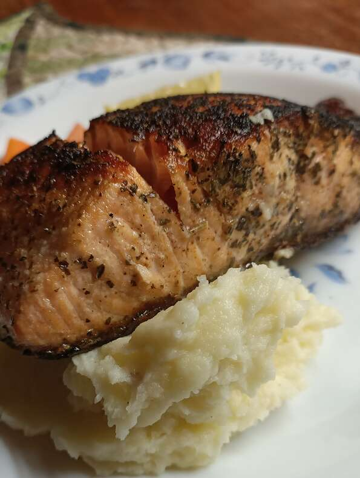

Super Simple Salmon

description
This is a very simple but delicious way to prepare fresh salmon using just a few ingredients from your pantry.
Ingredients
- 1 tablespoon garlic powder
- 1 tablespoon dried basil
- ½ teaspoon salt
- 4 (6 ounce) fillets salmon
- 2 tablespoons butter
- 4 lemon wedges
Steps
- Stir together the garlic powder, basil, and salt in a small bowl; rub in equal amounts onto the salmon fillets.
- Melt the butter in a skillet over medium heat; cook the salmon in the butter until browned and flaky, about 5 minutes per side. Serve each piece of salmon with a lemon wedge.